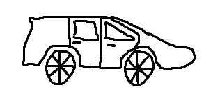

My name is Jeroen van der Valk. I am studying at the university of InHolland. At the time of writing this article I am 23 years old. As with most people my age, I worry about the future of my generation, especially with respect to the ever present threat that climate changes poses, this is also one of the main reasons I wanted to look if an EV was a viable option for me.
My first car
Back in 2023 my brother and I wanted to buy our first car. While looking at cars to buy, I researched almost every single aspect of EVs in great detail, also to prepare myself for how driving an EV would truly be.
Eventually we ended up buying a 2020 (30th of December) fully electric Opel Corsa. I’m incredibly happy with the car, I have even driven it to Paris and back to the Netherlands. If I had the choice, I would definitely buy it again.

This is my brother's and my car.
When I was researching cars, however, I realized how difficult it was to find concise information about EVs, how many stigmas, and legitimate concerns there are around EVs, which is why I have made this website.
If I have made a mistake in the information given on the website, or if you would just like to ask me a question, please fill in the form below and I will do my best to get back to you in a timely manner.